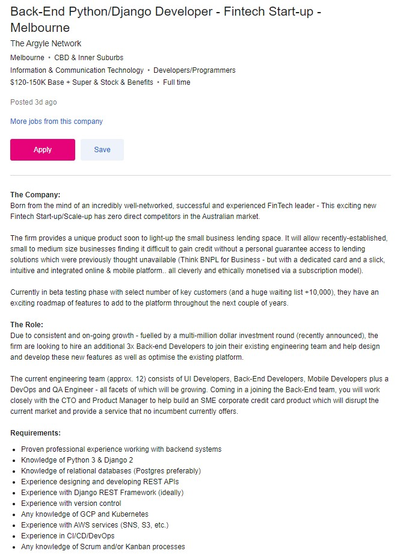

Gavin Jamieson - s3925654 - https://github.com/JamGav/webpage - https://jamgav.github.io/webpage/
My name is Gavin, student number s3925654. I am an Australian who grew up in Brisbane. My highest level of education is my trade, Avionics Technician. I have a keen interest in the world around me and learning about why things are the way they are.
My interest in IT started very young when I was your typical computer nerd. Later on I started getting interested in coding as a way to automate tasks and using microcontrollers like arduinos to change the world around me. Until now, this has all been self taught.
I chose to come to RMIT as it was offered via OUA. As someone who didnt really receive a meaningful grade in high school to do anything like this it seemed to offer me a bit of a start at my own pace.
As my current job involves a crossover between IT and the engineering and business side of aviation, I hope to learn more about the enterprise level systems that I interact with daily.
This job is a Python developer. Developer jobs are all about solving problems in a creative way with a unique set of constraints. This appeals to me because I like to get involved with technical issues and overcome challenges.
The Job requires x years of python, some data analysis skills, industry knowledge, and a qualification in IT or computer science.
Currently I possess a bit of programming skill in a variety of languages, but no real application of that in a setting beyond my own projects or things that I have worked on as the sole developer. I am developing skills in data analysis at the moment. It is very domain specific knowledge, but the skills should be transferable.
My plan to fill the gaps in this knowledge is largely to progress through this course. The developing of industry specific knowledge is not that important as over time my taste might change and I'll go down a different path.
I can relate to some of what the explanation of the results described, however I feel that am more likely to have a different assessment of many of the questions depending on context and even how I am feeling on the day.
For team based work, the results were almost spot on. I expect others to perform their task competantly and to speak up when requiring help. I also expect other team members to properly pass on skills and knowledge to those in the team that are still learning.
When forming a team, balance should be taken into account to ensure that there are stengths in every area. A team full if INTJs may not yield the best results.
While the test results shows that I was an auditory learner I was suprised at the result. The breakdown was Auditory - 45%, Visual - 25%, Tactile - 30%. If you had asked me to self assess I would have rated tactile at least double the actual result.
Assuming that this result is correct, I think that that it means that in a team I am more likely to seek a verbalised instruction from a team member than delving into written materials to find an instruction.
An effective team should be balanced. I think it would be prudent to form a team with many different results from this test and not too stacked into any particular category.
An average result of 8 shows puts me at the same score as most of the people taking the test. This shows that my short term memory is good enough to be considered average.
The results of this test will not influence my behaviour in a team, but in conjunction with the other tests it builds a picture of how I may fit in with other members of a team.
Depending on the tasks being carried out by the team it may by a good way to check some baseline cognitive abilites. Having the whole team at around the same level or at least above a minumum level may be important.
This project is for an easily expandable system of sensors for the camping and offroading community. Using small microcontrollers such as the ESP8266, a device such as a battery monitor or water level sensor would wirelessly communicate with a central device to provide realtime feedback of the state of a physical object. I intend for the project to be freely available and open sourced.
Many people are now choosing to holiday domestically. The market for caravans, 4x4s and their associated accessories has exploded over the last decade and in particular over the last year. Accessories such as batteries and fridges are cheaper and cheaper but both need to work optimally to ensure a good trip. I personally have arrived at a camp to discover that either the fridge had not been running, or my battery had discharged resulting in damage to an expensive battery. Individual products do exists that can alert you to a failure however no product exists that can monitor multiple systems and display a status board of the many sub systems that you install in your vehicle to make camping a bit easier.
The system can consist of a minimum of two devices, one sensor device and central data concentrator. A sensor could be any number of the following:
A central data concentrator such as a raspberry pi would serve triple duty as the Wireless Access Point, controlling server for the sensors, and display for data on a small attached screen. Due to the pi acting as an access point and also being the repository of all data collected from the sensors, the pi can also be connected to using a tablet device to view the sensor data on a larger screen.
Most products in the market currently only ever display the current value of the sensor instead of any historical data. In the case of water quantities or voltage and current, being able to view a trend can show potential problems or demonstrate a rate of consumption at a glance.
Using a temperature sensor in a fridge can alert the user to an exceedence in of any limit. For example, either an over or under temperature condition can cause food to spoil. A fridge installed in a compartment in a caravan may have been working in the morning when it was loaded with produce, but after eight hours on the road in the Australian summer the fridge may fail or may not be able to keep up with demand.
Using current sensors in conjunction with voltage sensors will allow you to get a good view of system and battery health. This could be used on both the input and output to auxiliary to get a picture of the charge rate of the battery and the consumption rate. Using a current sensor on a power supply to a device like a fridge can also show the duty cycle of the device.
A water quantity sensor provides a safety net. A strike to an underslung water tank resulting in a leak could have disastrous consequences when heading into a remote area for an extended duration. As the system is able to track the water quantity over time, an alert can be set if the usage rate exceeds a predetermined level.
In the case of installation into a caravan, a door not closed sensor can be invaluable. A door left ajar can result in damage to equipment and loss of property. Secondly, a door or hatch that manages to work itself loose during a journey over rough terrain can have severe consequences if vital equipment is damaged or lost. A door sensor installed in the interior of the caravan can alert a driver that something has come loose in the van while in motion.
The system also has the potential for remote control of systems such as:
The central data concentrator would be a raspberry pi due to its flexibility and low power consumption. The raspberry pi can run a flask webserver. The flask server allows for an easy configuration of both a REST type communication for the remote sensors and even the option of having the display and control on a small screen attached to the pi. The pi can also be configured to act as a wifi access point allowing for a reduced amount of materials.
The remote sensors could be any manner of microcontroller. Ideally the ESP family such as the ESP12, ESP32, or ESP8266. These chips all have wifi and a number of communication options for various sensors. The C language used in arduino is also very widely documented.
There are three main skills required for this project. Fortunately I have a bit of experience in all three areas.
Not much is required for a proof of concept prototype beyond an understanding of ohms law if using a battery monitor.
As the raspberry pi and arduino platforms are versatile, a lot of problems that you would traditional solve in the physical world with electronics knowledge can now be solved in software. Knowledge of Python and C is required to tie the project together
As the project involves communication over a wifi network, basic knowledge of networks is required. Since the devices will communicate using JSON over HTTP there isnt a requirement for a huge depth of knowledge in this area.
The desired outcome is to develop a system that is easily extendable and allows input from any other user that wishes to adopt the system. A measure of success would be the adoption of and expansion upon the system by liek minded individuals. A second measure would be seeing the system picked up by those without a technical background, but enough skill to follow assembly instructions and build their own basic working version. A succesful implementation of this system will result in less damaged batteries due to undervoltage, less spoiled food, less damage to or loss of equipment, and very importantly... No more warm beer!